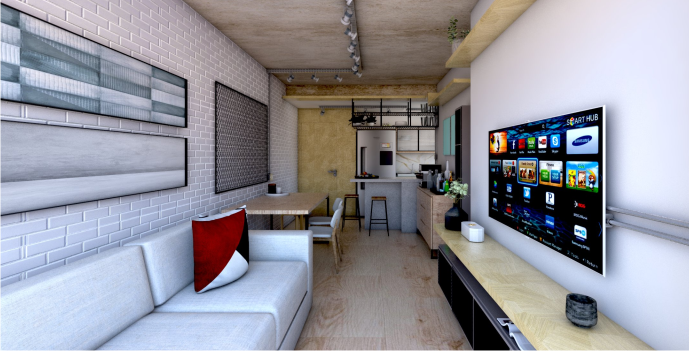
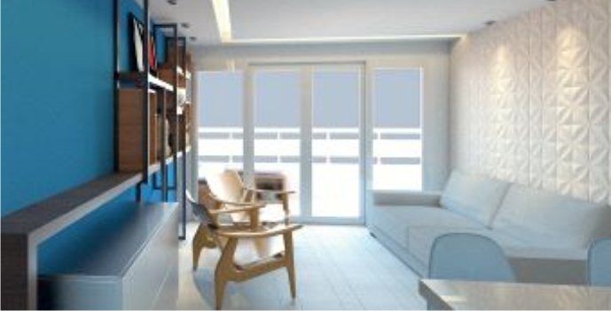
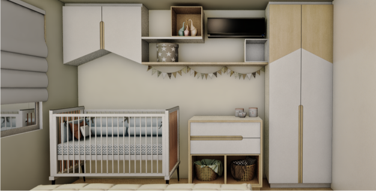
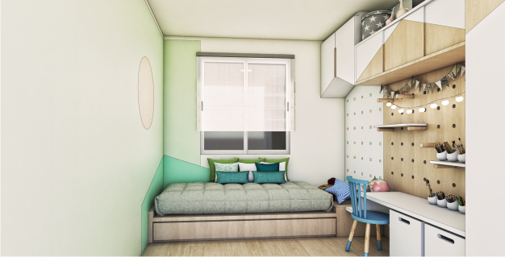

Projetos
Otimizamos os espaços com criatividade para dar maior funcionalidade e conforto.



Definimos acabamentos, revestimentos, cores, móveis e objetos de decoração de acordo com as necessidades e possibilidades do cliente.
Manter a sensação de interior amplo, no qual o espaço é aproveitado ao máximo, sem abrir mão do conforto e da personalidade marcante, é a principal premissa para escolher as peças que vão compor o layout.



A ideia é abrir espaços, liberar a circulação e criar um ambiente multiplo, com espaços confortáveis e de personalidade.